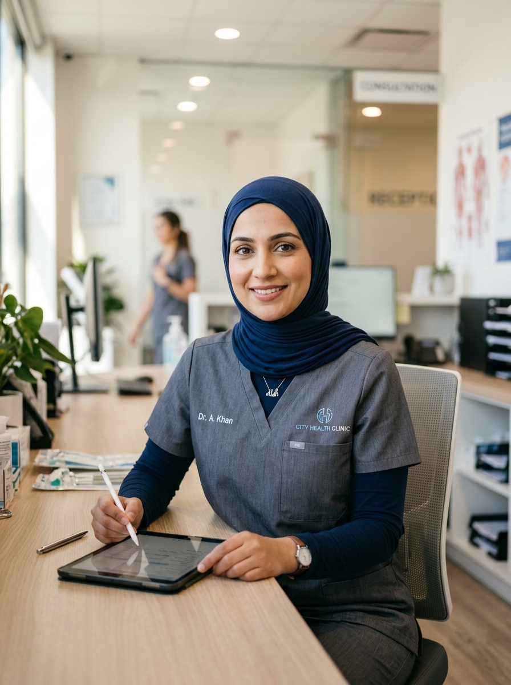

03/2015'ten itibaren Özel Ağrı Tedavisi Ek Nitelik
01.10.2015 tarihinden itibaren Mönchengladbach'ta kendi muayenehanesinde hizmet vermektedir
Muayenehane Ekibi
Nese Kirak
Tıbbi Asistan
Nese, muayenehanenin kuruluşundan beri bizimledir ve kayıt işlemlerinin sorunsuz ilerlemesini sağlar. Almanca ve Türkçe bilmesi sayesinde hastalarımız için güvenilir bir iletişim noktasıdır.
David Liu
Randevu Koordinatörü
David kayıt bölümünde sorunsuz bir işleyiş sağlar ve bekleme sürelerini en aza indirmek için her zaman uygun randevuları bulur.
Tatjana Kuznezov
Tıbbi Asistan Stajyeri
Tatjana, tıbbi asistanlık eğitimini bizde tamamlıyor ve ekibimize büyük bir hevesle katkıda bulunuyor. Hasta kaydı ve idari görevlerde destek sağlar.

Dr. Amira Khan
Nöroloji Uzmanı
Dr. Khan kapsamlı uluslararası deneyime sahiptir ve empatik ve bireysel hasta bakımına büyük önem vermektedir.
Elif Sayin
Randevu Koordinatörü
Elif, her üç lokasyonumuz için randevuları koordine eder. Sakin ve düzenli çalışma tarzıyla hastaların hızlı ve kolayca doğru randevuyu bulmalarına yardımcı olur.
Prof. Dr. Andreas Fischer
Kıdemli Tıbbi Uzman
Prof. Fischer ekibimizi onlarca yıllık klinik uzmanlık ve nöroşirürji alanındaki cerrahi deneyimi ile zenginleştirmektedir.
Iman Al Hussein
Tıbbi Asistan
Iman, Arapça konuşan hastalarımızla olan bağlantımızdır. Tıbbi dokümantasyon konusunda destek sağlar ve muayenehanede sıcak, çok dilli bir bakım sunulmasını garanti eder.
Ravi Sharma
Tıbbi Teknisyen
Ravi, tıbbi ekipman teknolojisi konusundaki uzmanımızdır ve dostça bir gülümsemeyle sorunsuz operasyonlar sağlar.
Abena Okafor
Tıbbi Asistan
Abena teşhis konusunda ekibimize aktif olarak destek verir ve sıcakkanlılığıyla hastaların hemen rahat hissetmelerini sağlar.
Elena Meyer
Kayıtlı Hemşire
Uzun yıllara dayanan deneyimi ve sakin, şefkatli doğasıyla Elena, tedavilerden önce ve sonra hastalarımızla ilgilenir.
Ekibimizin bir parçası olmak ister misiniz?
Yetenekli ve motive uzmanlara sahip olmaktan her zaman mutluluk duyarız.